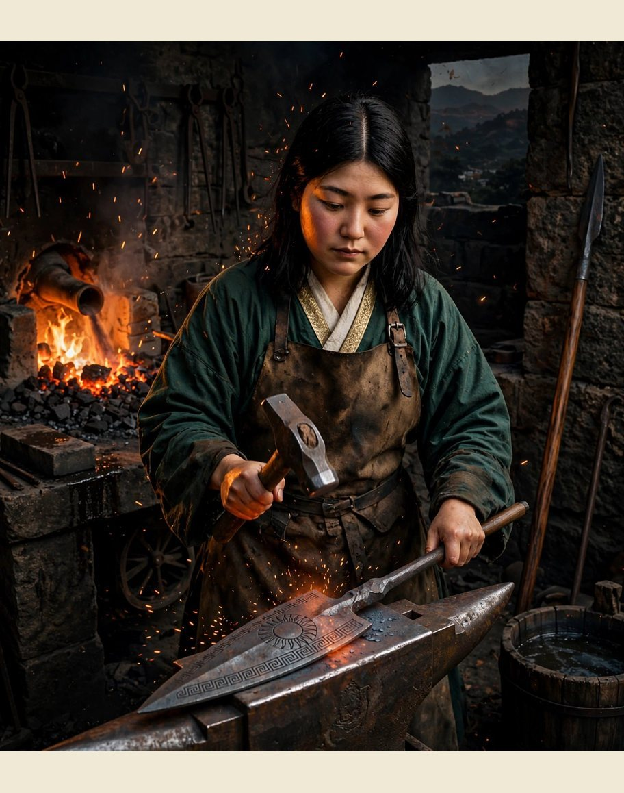
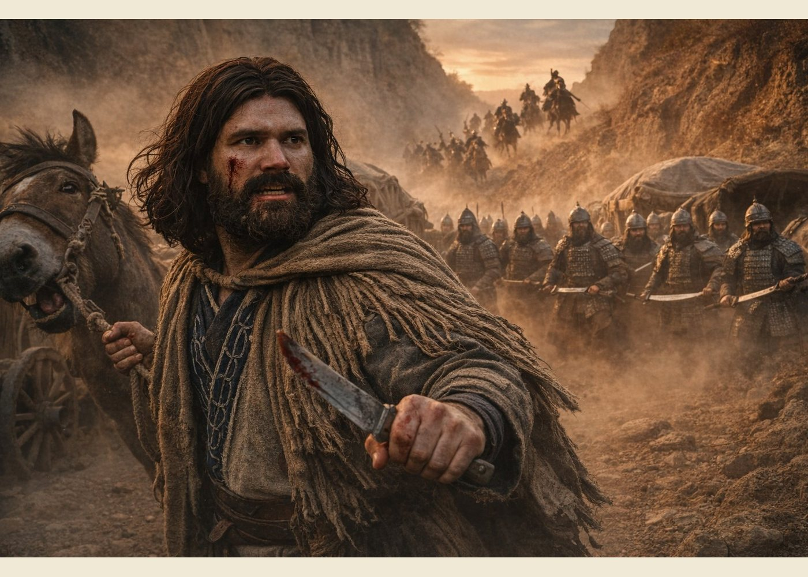
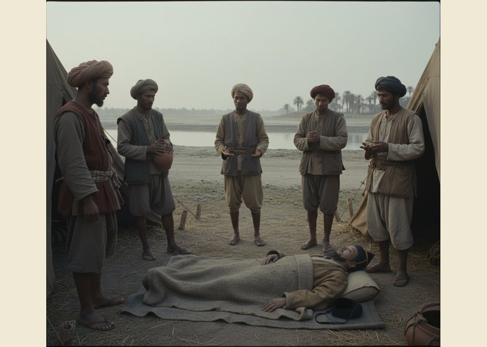
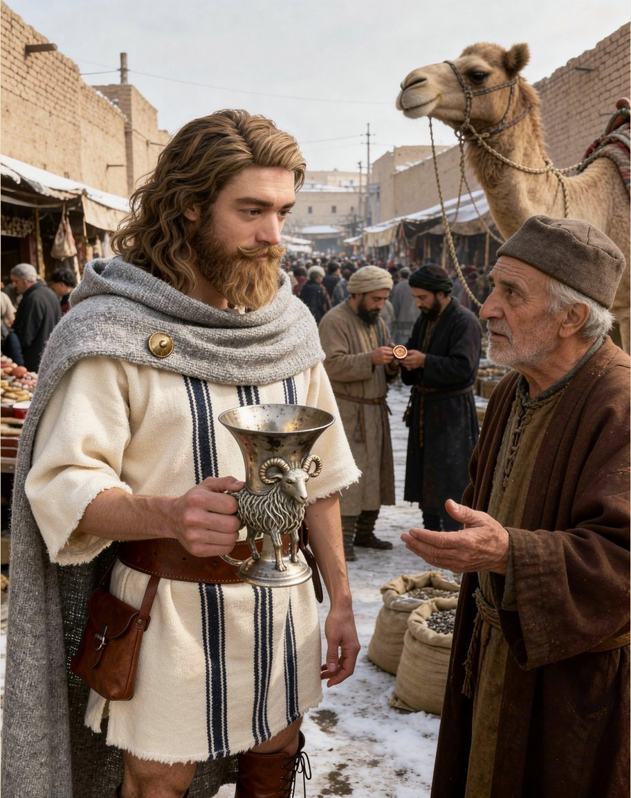
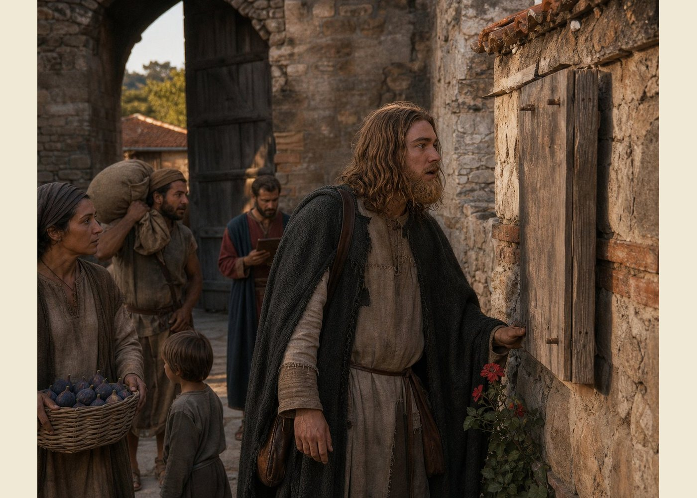
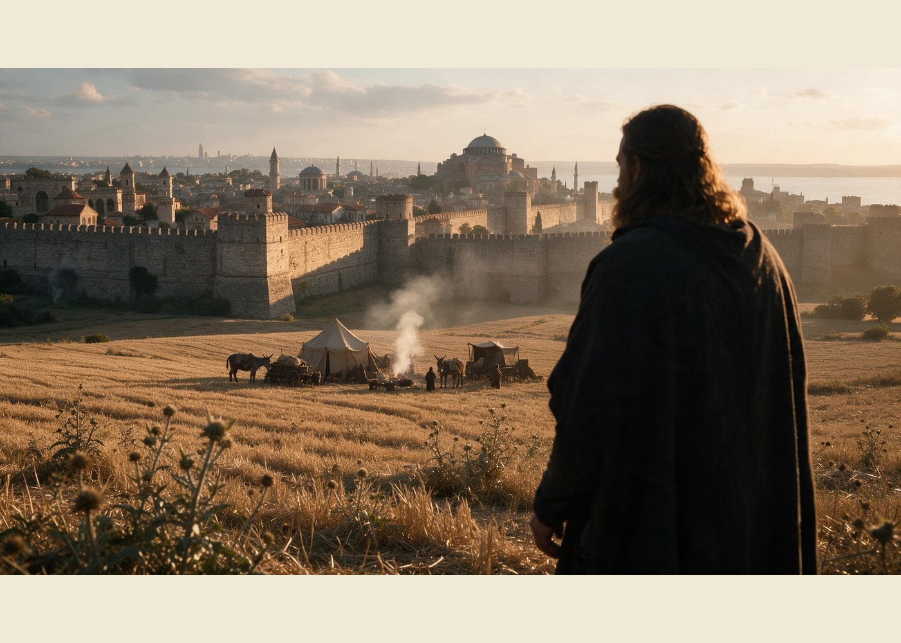

The ledger says we left Cedi in the fourth month of 874, and it says it in my hand, which makes it the first sentence of this book that is entirely mine. Shiriko'omaro wrote the first half of the chapter before this one and I wrote the end of it. Now I write all of it. The only qualification I have for the work is that I have never wanted to be anything but a man who keeps accounts, and that turns out to be the thing the book needs.
We went south-west when the roads dried, on a contract for grain merchants who wanted their carts seen over the ghats and their money not seen at all. It was guard work. The twelve Zhanmadao stood at the heads of the passes for six weeks and were never once asked to draw, and the merchants paid on time and asked no questions, which is the highest praise a contract can have. I entered it in two lines and neither of them was a complaint.
It was at Asirgarh that Matako made him the spear.
She is the company's smith. She is Japanese, of the Kushiro years, and she was twenty-four that spring, and she had spent the two years before it learning herbs and bonesetting at Tsunenao's elbow, which is a thing I did not notice happening and which will matter later. The spear she made at the fort forges in the months after the cairn, and she gave it to him without ceremony, the way you hand a man a rope you have been holding for him.
The head is wrought iron, etched with the Greek patterns she had copied off the coin and the chest hinges and the rim of the family's cup. The shaft is rosewood. On the socket, in Greek letters she could not read and had drawn by eye, are the house's four words. Nobody had told her the motto. She had found it in my ledger, where it is written at the head of every page the way a manifest carries the owner's name, and she had copied the shapes of the letters the way she copies everything, exactly, without being told why.
I record the spear because it is the first thing in this book that was made for the house rather than bought for it. A bought thing belongs to the man who paid for it and dies with him. A made thing belongs to whoever it was made for, and there is no column in a ledger for that distinction, which is why I am writing it in a chapter instead.

There is one thing from that year I did not write down, and I will write it now, once, and then leave it. On the march through Dahala, before we came to Cedi, the young man wrote a book of his own. It took eleven nights of lamp oil, which I know because I issue the oil, and it is a traveller's book, and it has a title I am not going to set down here. I did not read it. My reason at the time was that it was not mine to read. My reason since is that I was afraid of what a man writes in a book that nobody commissioned him to write and nobody is going to pay for.
Narwar
The Chambal country is a plain that somebody has broken. The rivers have cut down into it for a hundred miles and left walls of black soil standing between the channels, and the channels are full of scrub and the walls are full of paths, and a company with carts has exactly one road through it that is not a decision. We took it because it was the road.
We were attacked in a defile at dusk on the third day of the eleventh month of 874, by men who had watched us for two days and wanted the mules. I want to be exact about how it began, because I have read accounts of such things and they always begin with a shout. It began with a stone rolling down the bank on our left, which is a thing that happens on riverbanks, and then a great many men came out of the scrub at once and the whole trade of the company became a different trade for about a quarter of an hour.
The twelve held the carts. That is what they were, and it is the only time in five years I saw them used as soldiers rather than as a thing to be counted at a gate. They did not shout either. They came off the shafts in a line, the way they had stood at the cairn, and they put their great sabres into the space between the scrub and the wheels and they kept it, and I have never seen men work so quietly at anything.
Shiina was cut across the face holding the mules. He is the vainest man in this company and has been since he was twenty-two, and the mules were his because he does not trust anyone else with the lead rein. He had the rein in his left hand and his knife in his right, and something with an edge got him from the cheekbone to the jaw. He will tell you it was a sword of a certain length belonging to a certain kind of man. I am only recording that it was dark and that the mules were held.

It was Nannuka's horse that ended it. The lord of Narwar is forty-one years old and keeps a fort above the ravines, and everything the road says about him is true: that he is wrathful, that he trusts nobody, that he has not left his own walls in years for anything he could send a man to do instead. He came out because the fight was too close to his gate. He hates strangers and he hates robbers more, which is the whole of his politics, and he rode down that bank with his household behind him and the fight was over in less time than it takes to write it.
He fed us for three days and asked us nothing. A hundred and forty men and a hundred mules, in his own yard, with his own cooks, and not one question about where we had been or where we were going. I have been in this trade twenty-four years, and I have been fed by kings and by customs clerks, and I measure hospitality by what it costs the host and not by what it gives the guest. Three days, a yard, and no questions. It is the finest hospitality of the whole road and I do not expect to see its like again.
A lesser lord would have asked. The asking would have been the price, and we would have paid it, and we would have been his before we left the gate. That is what a company is: a thing that can be bought by dinner, if the dinner is large enough and the questions are the right ones.
The river
We went west after that, through Gujarat to the sea, and then north along the Indus. I am not going to pretend I can tell you the order of the towns, because I cannot, and a company that has been on the road for eight years stops keeping the road in the order it happened. The names in my book for that year are Valabhi, where there is a school that takes paying students of any nation and argues in public; Somnath, where the temple's revenue is a state's revenue and the Brahmins keep better accounts than the merchants; Dvaraka; Debul, at the mouth of the river; and Aror, inland, where the water is sweet.
It was the first sea since Samata, and the company behaved the way it always behaves at a coast, which is to say that half of them went and stood in it.
Aror was the capital of Sindh a hundred and sixty years ago, when an Arab army came down the coast and took it, and it has been a country of one faith governing another ever since. There is an old battlefield outside the town that the local men will show you for a small consideration. Edouinos asked them about it for an hour, and then asked the qadi about it, and then asked me what I thought, and I said that I thought the men who won it had come a long way and stayed, which is the only way a conquest is ever finished. He has been asking how kingdoms end since we were in China. He collects the answers.
Tsunenao died in his sleep on the twenty-third day of the fourth month of 875. He was fifty-two years old.
There was nothing to be done, and therefore nothing that any of us knew how to do. The other death had taken nine days, a word we would not say, and a spade, and the whole of it was work that a man could be given. This one took a night. He went to his blankets in the evening with a chest complaint he had carried for eight years and had never once allowed anybody else to treat, and in the morning he did not wake, and the company stood around him for a while in the flat light and did not know what to do with a death that required nothing.

He had never taken a wage. In six years with the company he drew no silver, because in the seventh month of 867 he had come out to us for a debt and had stayed, and after the debt was paid nobody had the nerve to offer him money and he never asked. He was the company's physician and its Wise Man, which is a word this book uses for a man who has decided something about the world and is not going to argue, and he was the only man in the company who could say *no* to Edouinos and be heard. I have watched him do it twice.
Matako took his medicine chest. Nobody gave it to her; nobody took it away. She had learned at his elbow for two years and she was the only person in the company who knew what was in the bottles, and so it went onto the cart in the morning with the rest of the dispensary and became hers by the only title a caravan understands. She has it still. I have entered it in the ledger under her name, which is how a thing like that gets settled.
Shiina had been all right since the cairn. This was the year I meant when I wrote that I had been right by about a year: he went quiet again, for the whole of that spring, and did his work and counted the mules and spoke when spoken to in the economy of a man who has decided that words cost more than they earn. It lasted until the second month of the next year and then it lifted, the way it had the first time, and by then we were in a country where nobody had known him any other way.
Makran, and a map
Makran is the emptiest country since the steppe. It is a coast of date palms and salt flats with a hot wind off the water and no road that a cart can use for more than a day at a time, and the men who live there are not poor the way the poor of a city are poor; they are poor the way a place is poor. We sold a cart for water at the third week. It was the wheelwright's cart, the good one, and he did not weep this time, because he had learned in China that a cart is a thing you can replace and a company is not.
At Bint, in Bampur, on the twenty-third day of the ninth month, Virupaksha bought a treasure map. He is the oldest of us, sixty years old that autumn and the only man in the company older than the century's halfway mark, and he bought it from the town crier for the price of a meal and gave it to Edouinos without a word, which is his entire method.
I asked him why. He said that the crier had been selling it for a month to men who wanted to be rich, and that he had been sorry for it, because the map was a good map and deserved better company. He said every caravan needs one thing it cannot justify, or the men begin to think the ledger is the truth.
We followed it north. Not because anybody believed it: because Gurgan is on the way to everywhere and the map put us on a road we wanted. Up through Persia to the Caspian coast, Abaskun and Bakrabad, and then across the water to Cheleken, where the ground seeps. It seeps a black oil that burns and a wax that burns better, and it has been doing it since before there were men to be interested. We filled two jars for the lamps. That is the whole treasure of Cheleken: a place can be exactly as wonderful as the map says and still be worth two jars, and the two facts do not contradict each other.
I entered it at its true value. Two jars of lamp oil, one good map, one story. It is the only entry in five years that has made the men laugh when I read the ledger out.
At Biyar, near Damghan, on the eighteenth day of the second month of 876, Edouinos bought a cup from a man named Hassan. It is silver, or it is a metal that has been silver for a thousand years, and it ends in a goat's head, and the goat has a beard of twisted wire and eyes that were once something else. Hassan sold it as a curiosity of the old kings and asked a curiosity's price for it, and got it, and was happy.
The young man knew exactly whose kings those were. He stood in the street with that cup in his hands for long enough that Hassan began to be uneasy, and then he paid, and we walked on, and he said one sentence about it, which was that Alexander had broken them and their cups had outlasted him. It is the only time I have seen him buy anything without bargaining, and I have seen him buy a horse.
It went into the chest. The chest has a cup in it already, the family's, and a coin of Menander, and a list of names, and one thing he has never taken out in front of me and never will. The goat's head went in beside them, wrapped in a cloth, and it is the first thing he has added to that chest since it came off the beach in 866.

The winter in the hills
We wintered in Jibal, in the hill country behind the Persian plain: Alamut on its rock, which is not yet anybody's fortress and is only a place where a road has to go round; Qazwin; and Hamadan, which is built on the ruins of a city that was old when the Greeks came through and is called Ecbatana in the books the young man reads.
There was a quarrel in that country and we walked into the middle of it, which is where the work is. The Persian lords of the hills owed the Caliphate its tax, and the Caliphate's men had begun to collect it the way men collect a debt they do not expect to be paid twice, and the lords wanted the roads watched and the caravans seen and one or two men made an example of. They were selling the same contract as the tax men were, and I priced both of them, and the tax men paid better.
We took the lords'. I want to be clear that this was a commercial decision and not a confession of faith. The tax men of that year were paying in promises and in letters of protection that would be worth something only if they won, and they were not going to win, and I said so, with figures. But a company that refuses one purse and takes another is a company that has said something, whether it meant to or not, and by the end of that winter a name was travelling in front of us that we had not put there.
In that winter Kurumpruhoda joined, who is a drunkard and a glutton and the most trusting man I have ever met, and Delaram, who does the company's buying in markets where a foreigner would be charged double and knows it. They came in on the same contract and have not left.
Greek names
At Arjesh, on Lake Van, on the eighteenth day of the tenth month of 877, Edouinos bought a bundle of maps from a woman named Mara. She is a mapmaker's widow and she was selling her husband's sheets because she cannot read them, which is the whole of her tragedy and the whole of our luck.
They are the best maps I have ever seen. They have the lay of the land in detail across half the world, and the roads on them are drawn by a man who had walked them, and the names are in three scripts in the margins where three scripts meet. He sat with that bundle for a night. I brought him a lamp at the second hour and he had not moved and I brought him another at the fourth and he had begun to copy something onto a sheet of his own.
It was the first map since Hakata on which the road ahead had names he could read. I know that because he said it, in the way he says things, once, and then went back to the map. In the second chapter of this book there is a sentence about a board at a harbour gate and a man who had stopped being able to read the signs. He had carried that sentence for ten years. The map on Lake Van was the first time it stopped being true.
We went north after that into Armenia and Georgia: Ani, which is a capital and a market and a place of churches; Dvin, which is the silk road's market and a holy city to two faiths at once; and Mtskheta, where the kings of Georgia are crowned in a church older than anything in the country around it. At Mtskheta an old Georgian joined us who calls himself Aghsartan the Bearded and is of good family and no prospects, and who will tell you, at length and without encouragement, about the Romans. Every word of it is a lie. All of it is useful.
At Colonea, in the Pontic hills, on the seventh day of the sixth month of 878, we came to the first town of the Roman empire. It is not much of a town. It has a wall, a market, a church, and a board at the gate with the day's notices on it, and the notices are in Greek.
He stood at that board and read it twice. The first time the way a man reads a thing he expects to be able to read. The second time the way a man reads a thing to make sure his eyes have not done something clever without him. Then he picked a geranium out of the wall, where it was growing out of a crack the way they do, and he put it in the ledger, and closed the book.
The flower is in there now, between the entry for the seventh day and the entry for the eighth day, and it is the only page in a thousand that is not a number. I have never asked him about it and he has never said anything about it. I am writing this paragraph because it is the one thing in five years that I could not enter in a column, and a man who keeps a ledger should say so when it happens.

That summer we took Mesud Longshanks's war. He is a nomad lord out of the steppe beyond the Caspian, a traveller himself, which is how he found us: his men come down to the Pontic markets with horses and go back with men, and they had been asking in three towns for a company that could hold a line. He was annexing a county called Kos-Buwak from a herder lord named Dundar, more than a thousand miles east of anywhere we intended to be, and he was paying in advance.
We took his silver and his cause and sent a detachment east with his riders for one season, and kept the twelve at home, because the twelve have been at his shoulder since the frontier and are the one body of men he does not lend. The war was not won. Kos-Buwak is Dundar's still. My entry for that contract is two lines long and the second line is the fee, which was the only part of it that was ever going to be true.
The City
We crossed Anatolia in the last of that year and the first of the next, and it is the longest stretch of walking in this book and the thinnest part of my ledger, because nothing happened in it that could not be written in a day's entry. Kaisereia, where a saint is buried and the tomb has a lamp in it that has been burning for four hundred years. Tyana, in Cappadocia, where the rock has been dug into houses and churches and stables and whole towns go down instead of up. Then south-west to the coast at Telmessos, in Caria, and the sea.
That is the sea at last. Shiriko'omaro wrote in his chapter about a sea that had a name the young man said in Greek and that he could never remember, and I looked it up in the maps of Mara's bundle in the eleventh month of 878 and it is the Aegean, the sea that Macedon looks out on, and the water we came down to at Telmessos is its edge. It is worth the whole of this chapter that a caravan master could not remember the name of a sea and that his second could look it up, and I have thought about that more than the ledger required me to.
Then north-west, all summer, along the coast and up, past Selymbria, and on an evening in the ninth month of 879 we came in sight of the wall.
I want to describe it as a merchant and not as a pilgrim. It is not one wall. It is a system of walls a mile deep with a moat at the foot and towers at intervals and gates that would take an hour to shut, and it runs from the water on one side to the water on the other, and it is the largest thing that has ever been built by men and I do not expect to see anything larger. Twelve years of walking from a beach in the north to a wall in the west, and the wall is not even at the edge of the thing it belongs to. The city is behind it and the city is what the wall is for.
We camped outside, in the field where companies camp, and the whole company went quiet in the way companies do when they come to something bigger than the argument they have been having with the road. The wheelwright, who has been with us since 872, stood and looked at it for a long time and then asked me whether the men who built it were Greeks. I said they were Romans, which is also true, and he asked me what the difference was, and I told him I would let him know.

Edouinos went up to the gate on the first morning with the chest left behind and one man with him, and he read the board at the gate, and then he read the boards in the market, and then he stood in the street for a while and listened.
Every word he had carried four thousand miles was in the mouths of the people around him. The porters were speaking Greek and the clerks were speaking Greek and the woman selling figs at the corner was speaking Greek to her child, and they were not Hellenes and the word meant nothing to them except what the priests had made of it. In that city a Hellene is a man who has not been baptised. That is the whole word. It is an insult in the mouth of a bishop and a piece of legal shorthand in the mouth of a clerk, and it means a man outside, a man in the dark, a man whose gods were a scandal and are now a joke and a name in a list of old errors.
He came back to the camp in the evening and he did not write anything, and I did not ask him. There was nothing to enter. Thirteen years, and the chest, and the coin, and the cup, and the names said at a fire on an empty shore to nobody, and at the end of it a city of Greek speakers who had never heard of any of it and would not have been interested.
The Distinguished Host was twelve years old that autumn, and it had come four thousand miles to find out that being understood and being one of them are two different trades, and that we had only ever been paid for the first.
That is where I stop this chapter. Not because the year stops there, and not because the city was all of it. Because a ledger stops when the man stops writing, and he did not write that night; and because I have been at the back of this company for eleven years with a book in my hand, and I would rather set down what I saw than what I have decided it means.